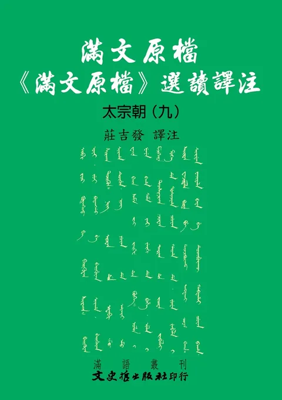
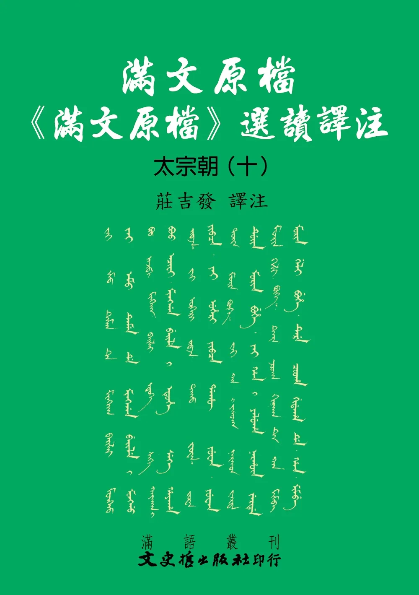
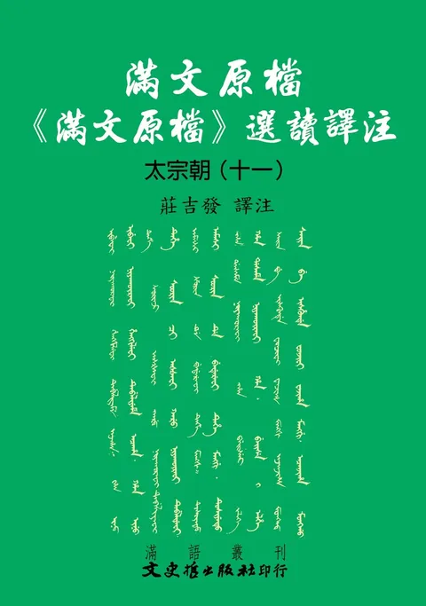

達呼爾故事滿文手稿
NT$ 500

清語老乞大
NT$ 500

清代準噶爾史料初編
NT$ 500

孫文成奏摺
NT$ 0
滿漢異域錄校注(精裝)
NT$ 500

雍正朝滿漢合璧奏摺校注
NT$ 500
滿語故事譯粹
NT$ 460

元明時代東傳日本的文獻
NT$ 280

元明時代東傳日本的文獻(精)
NT$ 320

明代倭寇史料（第一輯）
NT$ 900
明代倭寇史料（第二輯）
NT$ 900

鑑略妥註－歷史五字經
NT$ 0

鑑略妥註－歷史五字經
NT$ 0

古事今鑑（上．中．下）
NT$ 1200

古事今鑑（上．中．下）
NT$ 1500

明代倭寇史料（第三輯）
NT$ 900

明代倭寇史料（第四輯）
NT$ 900
明代倭寇史料（第五輯）
NT$ 900
滿語故事譯粹
NT$ 360

御門聽政：滿語對話選粹
NT$ 420
滿語童話故事
NT$ 340

明代倭寇史料（第六輯）
NT$ 900
明代倭寇史料（第七輯）
NT$ 900

通鑑論贊選釋
NT$ 180

治亂與人物
NT$ 0

風雨見龍蛇
NT$ 540

文海拾貝
NT$ 500
掀開歷史之謎
NT$ 300

楊貴妃考證研究
NT$ 340

西施考證研究
NT$ 260

文淵閣四庫全書元人別集補遺續
NT$ 360

特出人物志
NT$ 160

抗戰勝利台灣光復七十週年紀念專輯
NT$ 400

《鳥譜》滿文圖說校注全集
NT$ 2400

清代準噶爾史料初編（BOD）
NT$ 360

滿漢異域錄校注(增訂再版)
NT$ 560

清文指要解讀
NT$ 440

尼山薩蠻傳（BOD）
NT$ 300
滿語歷史故事
NT$ 480

續編兼漢清文指要解讀
NT$ 440

滿語常用會話
NT$ 600

滿漢西遊記會話
NT$ 580

滿漢諺語選集
NT$ 440

康熙滿文嘉言選：都俞吁咈
NT$ 580

滿漢對譯文選
NT$ 600

清與老乞大譯註
NT$ 420

佛門孝經：滿文譯本校注
NT$ 580

創製與薪傳：新疆察布爾錫伯族與滿州語文的傳承：以錫伯文教材為中心
NT$ 660

《西廂記》滿文譯本研究
NT$ 600

錫伯族西遷與滿洲語文的傳承：以《錫漢會話》為中心
NT$ 560

《鳥譜》滿文圖說校注第一冊
NT$ 350

《鳥譜》滿文圖說校注第二冊
NT$ 350

《鳥譜》滿文圖說校注第三冊
NT$ 450

《鳥譜》滿文圖說校注第四冊
NT$ 400

《鳥譜》滿文圖說校注第五冊
NT$ 400

《鳥譜》滿文圖說校注第六冊
NT$ 450

<<三國志通俗演義>>滿文譯本研究
NT$ 560

文獻足徵: 以<<大清太祖武皇帝實錄>>滿文本為中心的比較研究
NT$ 700

<<獸譜>>滿文圖說校注
NT$ 1260

過陰收魂: 尼山薩滿的滿語對話
NT$ 460

<<滿蒙漢合璧教科書>>滿文選讀校注
NT$ 360

玄奘取經: <<西遊記>>滿文譯本會話選讀
NT$ 500

滿文原檔:<<滿文原檔>>選讀譯注
NT$ 680

玄奘之路: <<西遊記>>滿文譯本選讀
NT$ 580

孫文成滿文奏摺
NT$ 1120
玄奘之聲: <<西遊記>>滿文譯本選讀
NT$ 480

滿文原檔<<滿文原檔>>選讀譯注: 太祖朝(二)
NT$ 700

滿文原檔<<滿文原檔>>選讀譯注: 太祖朝(三)
NT$ 720

滿文原檔<<滿文原檔>>選讀譯注: 太祖朝(四)
NT$ 720

滿文原檔<<滿文原檔>>選讀譯注: 太祖朝(五)
NT$ 740

滿文原檔<<滿文原檔>>選讀譯注: 太祖朝(六)
NT$ 720
滿文原檔<<滿文原檔>>選讀譯注: 太祖朝(七)
NT$ 750

滿文原檔<<滿文原檔>>選讀譯注: 太祖朝(八)
NT$ 740

滿文原檔<<滿文原檔>>選讀譯注: 太祖朝(九)
NT$ 720

滿文原檔<<滿文原檔>>選讀譯注: 太祖朝(十)
NT$ 740

滿文原檔<<滿文原檔>>選讀譯注: 太祖朝(十一)
NT$ 740

滿文原檔<<滿文原檔>>選讀譯注: 太祖朝(十二)
NT$ 740

滿文原檔<<滿文原檔>>選讀譯注: 太祖朝(十三)
NT$ 780

滿文原檔<<滿文原檔>>選讀譯注: 太祖朝(十四)
NT$ 780

滿文原檔<<滿文原檔>>選讀譯注: 太祖朝(十五)
NT$ 760

《欽定遼史語解》探索
NT$ 600

《欽定金史語解》探索
NT$ 600

《欽定元史語解》探索(一)
NT$ 600

《欽定元史語解》探索(二)
NT$ 600

《欽定元史語解》探索(三)
NT$ 600

《大清太祖武皇帝實錄》滿文本譯漢 卷一
NT$ 900

《大清太祖武皇帝實錄》滿文本譯漢 卷二
NT$ 750

《大清太祖武皇帝實錄》滿文本譯漢 卷三
NT$ 900

《大清太祖武皇帝實錄》滿文本譯漢 卷四
NT$ 900

滿文原檔《滿文原檔》選讀譯注 太宗朝(一)
NT$ 900

滿文原檔《滿文原檔》選讀譯注 太宗朝(二)
NT$ 820

滿文原檔《滿文原檔》選讀譯注 太宗朝(三)
NT$ 820

滿文原檔《滿文原檔》選讀譯注 太宗朝(四)
NT$ 840

滿文原檔《滿文原檔》選讀譯注 太宗朝(五)
NT$ 880

滿文原檔《滿文原檔》選讀譯注 太宗朝(六)
NT$ 880

滿文原檔《滿文原檔》選讀譯注 太宗朝(七)
NT$ 880

滿文原檔《滿文原檔》選讀譯注 太宗朝(八)
NT$ 880

滿文原檔《滿文原檔》選讀譯注 太宗朝(九)
NT$ 880

滿文原檔《滿文原檔》選讀譯注 太宗朝(十)
NT$ 880

滿文原檔《滿文原檔》選讀譯注 太宗朝(十一)
NT$ 880

滿文原檔《滿文原檔》選讀譯注 太宗朝（十三）
NT$ 880

滿文原檔《滿文原檔》選讀譯注 太宗朝(十二)
NT$ 880